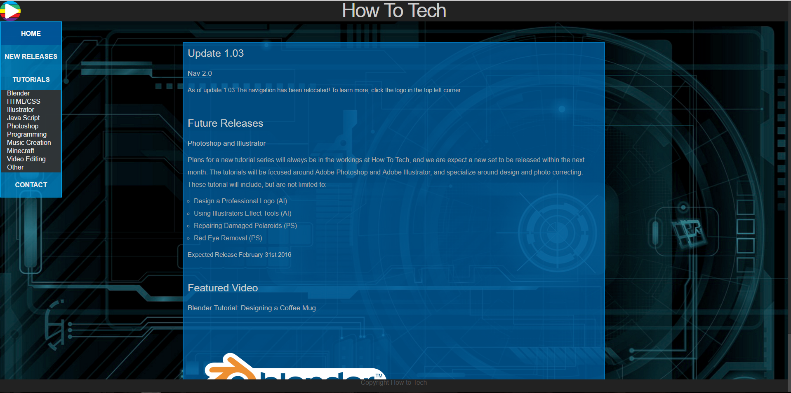
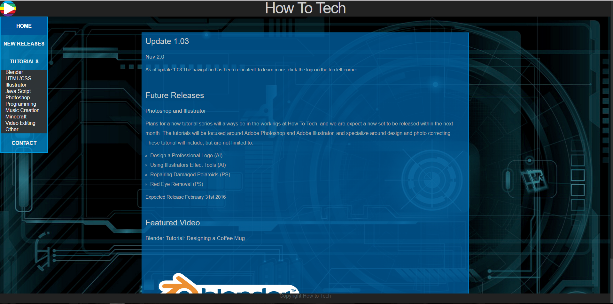

Web Development Portfolio
Tomas Johnson
Portfolio
This portfolio was created as a way to display personal skills that I have improved uppon over these past few years. You will be able to see my gradual progression in CSS, HTML, and javascript expirience. You will find Webstites, Javascript Projects, and Media projects in this section.
These are projects that I believe show my progression in this field, and how far I have come within the programming pathway.
Content standard 1.0: Understanding Web Page Development
Content standard 1 involves the basics of developing a website using HTML and CSS. All of these standards 1.1-1.3 can be demenstrated within various developed websites that I have created in the past. The examples listed below shows a CSS recreation of the Apple website,a s well as a video class project site that includes various transparencys and navigational design.
standard 1.1: Use Standards-Compliant HTML to Create Basic Web Pages
standard 1.2: Use Styles to Format Web Pages
standard 1.3: Demonstrate an Understanding of Advanced CSS Selectors and Properties
 

Content standard 2.0: Understanding Web Page Design and Layout
Content standard 2 Address CSS and the design behind the website, and the standerds behind how CSS forms and molds a webpage. This includes various css styling tags and technicues, along with the fundementals of design itself. Examples of this are the Apple CSS recreation, and the mock VRBO project site.
standard 2.1: Demonstrate Understanding of Color Theory as it Applies to Web Design and Development
standard 2.2: Enchance Web Pages with List, Images and Background-Images
standard 2.3: Demonstrate Understanding of and Use the Box Model
standard 2.4: Demonstrate the Ability to Effectively Design and Layout Web Pages Using CSS

Content standard 3.0: Understanding Web Page Design and Layout
Standard 3 applies to Forms and the two kinds of Tables. Layout and Data tables are addressed in standard 3.1, while forms are addressed in 3.2. No current examples for 3.1 exists except for a detailed explanation. 3.2 can be demostrated by a form created for the VRBO website project, which contains a contact form.
standard 3.1: Appropriately Use Tables to Enhance their Web Pages
standard 3.2: Demonstrate the Ability to Use Design and Layout Web Forms
Content standard 4.0: Understanding Web Related Planning and Organizational Standards
Standard 4 covers the proccess of designing the layout, analyzing the audience, site organization and navigational layout. This also includes accesibility, as well as following the WCAG and section 508. The examples that cover these topics are the VRBO project and the Apple CSS recreation. Both of these follow the WCAG guidlines, provide various navigations, and both used a begining layou and are targeted towards a base audience.
standard 4.1: Demonstrate Understanding of Website Architecture and Planning
standard 4.2: Demonstrate Understanding of Site Organization and Navigation Principles
standard 4.3: Demonstrate Understanding of Website Accessibility Standards
Content standard 5.0: Understanding The Relationship of Web Marketing
Content Standard 5 covers social media, marketig tactics, widgets and plugins, as well as traffic analysis on a webpage. I only have one page that remotley addresses this stnadered, and that would be a wordpress site that uses various widgets on the site.
standard 5.1: Use Multimedia on the Web
standard 5.2: Demonstrate Brand and Marketing and Traffic Analysis
standard 5.3: Understand the Relationship Between the Web and Social Media